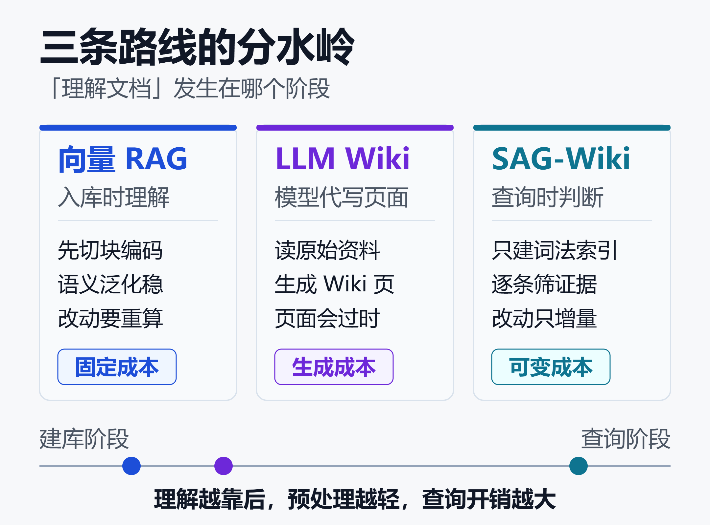
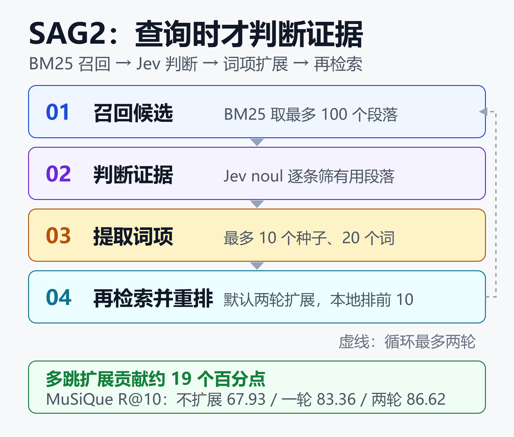

SAG-Wiki 对比向量 RAG 和 LLM Wiki：三条路线的成本与溯源差异
SAG-Wiki 是一个给人和 Agent 用的本地知识库。把一个文件夹加进去，里面的文档、笔记和代码就能立刻搜；配上模型后还能跨文件提问，答案附带能点回原文的引用。文件留在原处，不用上传，也不用先切成向量。
14 MB、2.36 秒、零次模型调用。
这是 SAG-Wiki 交出的三个数字：安装包 14 MB 左右；论文记录中 11656 段原文建索引耗时 2.36 秒，生成 25.87 MiB 的 SQLite 库；整个过程不调用任何模型。
对照一下熟悉的知识库流程：导入文档、切块、跑 Embedding、写进向量库，文件一改就要重算受影响的切片。SAG-Wiki 把这套前置动作整个拿掉了。
它背后是 2026 年 10 月公开的 SAG2 检索方法，产品端是一个本地桌面应用加一条 Rust CLI。截至 2026 年 11 月 12 日，GitHub 仓库显示 1100 个 Star、128 个 Fork，创建日期是 10 月 18 日——不到一个月。
三条路线摆在一起，差别其实不在"谁更准"，而在什么时候理解文档。这个时间点决定了成本落在哪、答案能不能点回原文、以及文件改动后要重做多少事。
一、分水岭：什么时候"理解"文档
向量 RAG 把理解压在入库阶段。切块、编码成向量、建索引，查询时算相似度召回。好处是语义泛化能力强，代价是准备成本固定发生，且文件变动会触发重算。
Karpathy 提出的 LLM Wiki 模式走了另一头：让 Agent 读原始资料，生成并维护一套互相链接的 Wiki 页面。检索对象不再是原文，而是模型整理过的二手表述，页面会随资料变化而过时。
SAG-Wiki 选择两头都不占。索引阶段只做词法处理，把原文片段和词项位置写进 SQLite FTS5；语义判断推迟到查询发生的那一刻，由决策模型逐条筛证据。

三条路线的差别可以压缩成一句话：向量 RAG 先理解后查，LLM Wiki 让模型替读者重写一遍，SAG-Wiki 只在被问到时才理解，且理解的产物不落盘。
| 路线 | 建库阶段 | 查询阶段 |
|---|---|---|
| 向量 RAG | 切块并编码 | 相似度召回 |
| LLM Wiki | 生成 Wiki 页 | 读生成页面 |
| SAG-Wiki | 词法索引 | 判断证据 |
这里有个容易混淆的点：SAG-Wiki 并非"完全不用模型"。它把模型从索引阶段挪到了查询阶段，且拆成两个角色——Jev 负责判断哪段是证据，另一个 LLM 才负责写答案。不用模型的是索引和本地快搜。
二、SAG2 怎么在查询时把线索串起来
多跳问题的典型形态是：一段文字说某人出生在某地，另一段说明此地属于哪个县，两段合起来才能回答。传统做法靠预先建好的向量或实体关系图把这两段连起来。
SAG2 的做法是把连接动作放到查询时循环执行。

流程是四步循环：BM25 先召回最多 100 个候选段落；Jev 用 noul 形式判断每段对当前问题是否构成必要证据；从被选中的段落里挑扩展词，最多 10 个种子、20 个词项，依据词频、稀有度和已有证据打分；再用这些词检索下一轮。
默认在初次检索之外再加两轮扩展，最后由本地多样化排序给出前 10 条结果，这一排序不再发起模型请求。
关键在于索引里没有生成内容。复现仓库明确说明：原始文本不添加任何生成标注，标准答案和证据标签只用于评测。词项与段落的联系直接来自原文，因此文件改了只需增量更新索引，不必重算语义表示。
消融数据能看出循环本身的价值。在 MuSiQue 上，两轮扩展的 R@10 为 86.62，一轮为 83.36，只做 BM25 加 Jev 不扩展为 67.93。多跳扩展贡献了约 19 个百分点，而不是单纯靠换一个更强的模型。
需要留一句：这些数字来自论文配套的固定开发子集，MuSiQue 同时被用于方法开发。差距的方向可信，具体幅度要在自己的语料上重测。
三、成本账：省在索引，花在查询
向量 RAG 的成本结构是一次性固定投入加持续维护。切块策略、Embedding 模型、向量库、重排服务，每一样都要选、要调、要运维；文档一变，受影响的切片和向量跟着重来。
LLM Wiki 的成本更隐蔽：生成页面时烧 token，页面过期后还要再烧一次。资料越多、变动越频繁，维护生成层的开销越明显。
SAG2 把大头换成按查询计费的可变成本。建库阶段零模型调用，查询阶段每次都要让 Jev 判断若干候选段落。官方复现仓库记录的历史成本约为每 100 题 0.43 美元、每 1000 题 4.33 美元，不含算力租赁与答案生成。
| 成本项 | 向量 RAG | SAG2 |
|---|---|---|
| 建库模型费 | 有 | 零 |
| 索引存储 | 向量库 | 单文件 |
| 文件改动 | 重算切片 | 增量更新 |
| 查询开销 | 相似度计算 | 模型判断 |
公开测评转述的一代 SAG 数据为：同样 11656 段文本建库需 4.57 小时、消耗约 2826 万 token。二代把这个环节压到 2.36 秒且无 token 消耗。该对照来自二手报道，论文正文未列这一组数字，引用时按量级理解即可。
成本结构换轨带来一个实际后果：低频使用的个人资料库非常划算，因为不查就不花钱；高频、大并发的企业检索反而要重新算账，每次查询的模型判断会累积。两条路线不存在绝对优劣，只看调用曲线长什么样。
四、溯源：答案能不能点回原文
这是三条路线分得最开的一维。
向量 RAG 返回的是切片。切块本身会切断上下文，跨页表格、被拆开的数字和条件限定，都可能在编码时丢失。答案引用的往往是"某一段向量对应的文本"，而非原文里可定位的连续位置。
LLM Wiki 返回的是生成页面。页面可读性好，但它是模型对资料的复述，原文里的条件、时态和限定词是否保留，取决于生成质量。
SAG-Wiki 存的是位置。架构文档写明：SQLite 保存标题路径、字节范围、行列位置；读取检索结果时服务会访问原文件并校验哈希，文件变了就请求重新索引，绝不把旧位置套到新内容上。FTS5 使用 content='' 只存词项，不复制正文。
答案里的每个引用编号可以点开，右侧显示原文并高亮对应段落。
更特别的是保存笔记这一步：笔记以 Markdown 存在用户目录，frontmatter 用文件哈希、字节范围和保存时的原文把每条引用锚住，随后在本地核对状态分为一致、位置更新、内容修改、缺失、未核对五类，全程不调用模型。
这套设计解决的是"引用还在不在"，不是"结论对不对"。官方示例里那句"准备回退方案"与"回退方案已经演练"只差几个字，落到发布会上结论完全不同；引用点开后仍要由人读上下文。能点回原文，是因为证据还在手里，判断没有被外包。
五、数据怎么读：86.62% 背后的三张表
论文与复现仓库给出的主要结果如下，评测单位均为证据召回率。
| 评测集 | SAG2 R@10 | 对照最高 |
|---|---|---|
| MuSiQue | 86.62% | 83.37% |
| 2Wiki | 97.43% | 93.57% |
| HotpotQA | 99.00% | 97.70% |
三个数据集各取 1000 题，对照列取自论文主表中除 SAG2 外的最高值（分别来自一代 SAG 与 NV-Embed-v2 等）。MuSiQue 的 R@5 为 80.68%，比 HippoRAG 2 的 65.13% 高 15.55 个百分点。
规模测试更值得看：EnterpriseRAG-Bench 覆盖 511962 份模拟企业邮件、工单与会议记录，470 道标注题上，SAG2 的文档 R@10 为 81.10%，BM25 为 68.4%、纯向量为 46.0%、Bash Agent 为 55.8%。复现仓库注明 Bash Agent 的输出预算与其他方法不同，这一列不宜直接当同等条件对比。
读这组数字要带四条边界：
- 基准由论文作者开源在 SAG-Benchmark（MIT），复现脚本、数据集版本和参数都公开，但 MuSiQue 子集用于方法开发。
- 一代 SAG 与 BM25 的对照值取自原 SAG 论文的参考数值，并非在本次实验中同条件重跑。
- 官方尚未公布独立第三方在相同基准上的复现结果，暂时没有同基准的外部验证。
- 中文、代码、企业私有语料上的表现需要单独测；跨语言检索是 0.2.6 才加入的能力。
换句话说，结论是"这条路在公开多跳基准上跑得通且很轻"，不是"对所有语料都更好"。效果需要在自己的数据上验证，尤其是术语密集、缩写泛滥、同义表述多的场景——那些恰好是词法召回最容易漏的地方。
六、三条路线各自适合谁
| 场景 | 优先路线 | 关键原因 |
|---|---|---|
| 复杂排版扫描件 | 向量 RAG | 解析能力强 |
| 语义模糊提问 | 向量 RAG | 泛化更稳 |
| Agent 长期沉淀 | LLM Wiki | 页面可编译 |
| 文件频繁改动 | SAG-Wiki | 增量索引 |
| 要求逐条回查 | SAG-Wiki | 锚点定位 |
向量 RAG 的生态成熟度仍是最大优势。RAGFlow 的版面解析、AnythingLLM 的零配置桌面、Dify 的可视化编排，都解决了 SAG-Wiki 目前没有覆盖的工程问题。
具体平台差异可看 Dify vs Coze vs RAGFlow vs N8N vs FastGPT：2026年低代码AI平台深度对比。
词法检索并没有被向量检索取代，这一点在更大规模的混合检索研究里已有讨论，可参考 BM25 没有过时，反而在大规模 RAG 里赢了：原理、混合检索与最新规模研究。
SAG2 的不同之处，是连混合检索里的稠密那一半也去掉了。
至于图结构路线要不要上，成本结构完全不同，见 你真的需要 GraphRAG 吗？微软开源方案的原理、成本与选型指南（2026）。
七、上手前先确认的四件事
平台范围。 官方 Release 只提供 macOS Apple Silicon 与 Windows x64 安装包，v0.2.11 于 11 月 13 日发布，Windows 安装包约 21.4 MB、macOS DMG 约 21.6 MB。Linux 暂无预编译二进制，需要自行从 Rust 源码构建。
数据边界。 本地快搜与索引完全离线，不需要任何 API Key；配置 Jev 与答案模型后，深入检索和问答会把问题、文档片段或上下文发往所选服务。0.2.6 起支持指向本地 Jev 服务并关闭鉴权：
sag config --url http://127.0.0.1:8000/v1 \
--model local --auth none
接公司文档前，先确认服务方能接收哪一类资料。
Jev 不是事实裁判。 它输出的是受限选项上的判断与概率，"不会编造"指的是不会返回列表之外的答案，不等于事实正确。
厂商文档列出九项已知缺陷，包括计数不可靠、把日期当纯文本、非英语表现较弱；厂商宣称的 193.6 倍提速与第三方实测的 5 到 18 倍之间也有距离。
相关讨论见 决策模型选型：Jev 闭源收费，Laya 开源免费，谁的概率能信？。
项目年龄与默认配置。 仓库 10 月 18 日创建，0.2.x 阶段接口和配置流程仍可能调整。0.2.6 起每轮工具调用上限默认值从 10 改为 0（不限制），长会话里建议按预算手动设一个 1 到 100 的限值。
命令行接入只需四步，Node.js 18 以上即可，且不必安装桌面端：
npm i -g @zleap-ai/sag
sag add
sag check
sag "权限在哪里检查?" . -m 5
CLI 与桌面端共用同一个后台 Rust 服务，退出桌面后服务仍在；服务只监听 127.0.0.1，用随机端口和 token，连接信息写在用户数据目录。Claude Code、Codex、OpenCode 都有对应 Skill，0.2.6 起本机服务直接提供 sag-wiki.md 供 Agent 读取。
验证是否适合自己，成本最低的方式是建一个小文件夹，放三份不敏感的资料，其中一份故意写一条已作废的旧结论。先问两个已知答案的问题，再挨个点开引用。回答写得顺不等于省时间，能站回原文的那一句才算数。
小结
三条路线的分歧，最终落在"理解文档"这个动作发生在哪个时刻。
向量 RAG 提前理解，换来语义泛化与成熟生态，付出预处理和维护成本；LLM Wiki 让模型代写，换来可读性与沉淀，付出生成成本与页面时效；SAG-Wiki 把理解推迟到查询时，换来零预处理、增量更新和可锚定的原文位置，付出按次计费的模型判断与对词法召回的依赖。
SAG2 真正证明的是一件更窄的事：多跳检索的精度不必靠离线预计算换来。对每天要在本地文档和代码库里回查的人来说，这已经足够构成一个新选项。
0.2.x 阶段它还在证明另一半——中文语料、私有术语、高频调用下的成本曲线，以及脱离官方基准之后还剩多少优势。这些都需要拿自己的数据跑一遍。
免责声明
本文数据来自公开论文、官方仓库文档、Release 说明与公开测评，统计口径与时间点已在文中标注。项目处于 0.2.x 阶段，功能、接口与服务配置可能变动，使用前请以官方最新文档为准。
文中涉及的基准成绩为特定数据集与配置下的结果，不构成对实际业务效果的保证，也不构成任何采购或投资建议。
参考来源
- GitHub —— Zleap-AI/SAG-Wiki 项目仓库与英文 README
- GitHub —— SAG-Wiki 简体中文 README（v0.2.7）
- arXiv —— SAG2: Embedding-Free Multi-Hop Retrieval with BM25 and JEV
- GitHub —— Zleap-AI/SAG-Benchmark 官方基准复现仓库
- GitHub —— SAG-Benchmark SAG2 中文复现说明
- GitHub —— SAG-Wiki 架构设计文档 Architecture
- GitHub —— SAG-Wiki CHANGELOG 版本更新日志
- GitHub —— SAG Wiki 0.2.7 Release 与安装包体积
- Karpathy —— LLM Wiki 模式原始 gist
- LangChain —— 标准向量 RAG 检索流程文档
- CIOAge —— 三无系统 SAG2 拿下三个多跳基准第一
- BestBlogs —— SAG2 与 SAG Wiki 桌面端实测
- AITNT —— SAG2 建库速度与一代对照数据
- declic.media —— Jev, the AI built to make decisions
- TechGig —— TypeSafe AI's Jev model speeds structured decision-making
- DEV Community —— SAG 一代多跳检索与 MCP 集成解析
- 微信公众号 —— 用 SAG-Wiki 查发布资料，答案能点回哪一段
相关阅读
- Dify vs Coze vs RAGFlow vs N8N vs FastGPT：2026年低代码AI平台深度对比
- BM25 没有过时，反而在大规模 RAG 里赢了：原理、混合检索与最新规模研究
- 你真的需要 GraphRAG 吗？微软开源方案的原理、成本与选型指南（2026）
- 决策模型选型：Jev 闭源收费，Laya 开源免费，谁的概率能信？
- 2026 开源向量库全景对比：Milvus、Qdrant、Weaviate、pgvector 到底怎么选
推荐搭配装备
善其事，利其器。以下硬件能最大化你的AI体验👇
🔗 通过以上链接购买可支持本站持续运营 🙏